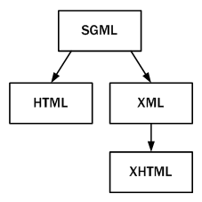

4. HyperText Markup Language¶
Learning outcomes¶
- Classify the markup languages ​​of the web environment.
- Know the different sections that make up HTML documents.
- Create well-formed XHTML documents.
- Identify the differences between XHTML and HMTL.
- Recognize the use of XHTML in information management systems.
- Use tools to develop XHTML documents.
Contents¶
- HTML: structure of a web page.
- Identification of HTML tags and attributes.
- XHTML: syntactic and structural differences with HTML.
- Advantages of XHTML over HTML.
- HTML and XHTML versions.
- HTML to XHTML conversion.
- Web design tools.
- Transmission of information through markup languages.
Assessment criteria¶
- Markup languages ​​related to the web and their versions have been identified and classified.
- The structure of an HTML document has been analyzed and the sections that make it up have been identified.
- The functionality of the main tags and attributes of the HTML language have been recognized.
- The similarities and differences between HTML and XHTML languages ​​have been established.
- The use of XHTML in information management systems is recognized.
- Tools are used in the creation of web documents.
HyperText Markup Language¶
The HyperText Markup Language, or HTML is the standard markup language for documents designed to be displayed in a web browser. It can be assisted by technologies such as Cascading Style Sheets (CSS) and scripting languages such as JavaScript.
A little history¶
- In 1980, Tim Berners-Lee, a physicist at CERN, proposed and prototyped ENQUIRE, a system for CERN researchers to use and share documents.
- In 1989, Berners-Lee wrote a memo proposing an Internet-based hypertext system.
- Berners-Lee specified HTML and wrote the browser and server software in late 1990.
- The first publicly available description of HTML was a document called "HTML Tags", first mentioned on the Internet by Tim Berners-Lee in late 1991.
- Berners-Lee considered HTML to be an application of SGML.
- It was formally defined as such by the Internet Engineering Task Force (IETF) with the mid-1993 publication of the first proposal for an HTML specification, the "Hypertext Markup Language (HTML)" Internet Draft by Berners-Lee and Dan Connolly, which included an SGML Document type definition to define the grammar.
- The draft expired after six months, but was notable for its acknowledgment of the NCSA Mosaic browser's custom tag for embedding in-line images, reflecting the IETF's philosophy of basing standards on successful prototypes.
- Similarly, Dave Raggett's competing Internet-Draft, "HTML+ (Hypertext Markup Format)", from late 1993, suggested standardizing already-implemented features like tables and fill-out forms.
- After the HTML and HTML+ drafts expired in early 1994, the IETF created an HTML Working Group, which in 1995 completed "HTML 2.0", the first HTML specification intended to be treated as a standard against which future implementations should be based.
- Further development under the auspices of the IETF was stalled by competing interests. Since 1996, the HTML specifications have been maintained, with input from commercial software vendors, by the World Wide Web Consortium (W3C).
- However, in 2000, HTML also became an international standard (ISO/IEC 15445:2000).
- HTML 4.01 was published in late 1999, with further errata published through 2001.
- In 2004, development began on HTML5 in the Web Hypertext Application Technology Working Group (WHATWG), which became a joint deliverable with the W3C in 2008, and completed and standardized on 28 October 2014.
- In July 2012, WHATWG and W3C decided on a degree of separation. W3C will continue the HTML5 specification work, focusing on a single definitive standard, which is considered as a "snapshot" by WHATWG. The WHATWG organization will continue its work with HTML5 as a "Living Standard". The concept of a living standard is that it is never complete and is always being updated and improved. New features can be added but functionality will not be removed.
- On 28 May 2019, the W3C announced that WHATWG would be the sole publisher of the HTML and DOM standards.The W3C and WHATWG had been publishing competing standards since 2012. While the W3C standard was identical to the WHATWG in 2007 the standards have since progressively diverged due to different design decisions. The WHATWG "Living Standard" had been the de facto web standard for some time.
HTML and browsers timeline¶

HTML 5¶
- 2011 HTML5 – Last Call
- 2012 HTML5 – Candidate Recommendation
- 2014 HTML5 – Proposed Recommendation and Recommendation
- 2016 HTML 5.1 - Published as a W3C Recommendation.
- 2017 HTML 5.2 - Published as a W3C Recommendation.
- Currently the standard is maintained by WHATWG and it is known as a "living standard"
HTML 4.01 vs XHTML 1.1¶

HTML 5 vs (X)HTML5¶

📹 What is "The Web" and how does it work?¶
https://www.youtube.com/watch?v=O_GWbkXIqEY&list=PLo3w8EB99pqLEopnunz-dOOBJ8t-Wgt2g&index=1
📹 What's HTML and how does it work?¶
Related contents in MDN¶
Activities¶
-
401-letter.htmlBefore doing this task you must have worked through the sections in the prerequisites box. https://developer.mozilla.org/en-US/docs/Learn/HTML/Introduction_to_HTML/Marking_up_a_letter -
402-webpagestructure.html: Before doing this task you must have worked through the sections in the prerequisites box https://developer.mozilla.org/en-US/docs/Learn/HTML/Introduction_to_HTML/Structuring_a_page_of_content -
403-mozilla-splash.zip: Before doing this task you must have worked through the sections in the prerequisites box https://developer.mozilla.org/en-US/docs/Learn/HTML/Multimedia_and_embedding/Mozilla_splash_page -
404-planet-table.html: Before doing this task you must have worked through the sections in the prerequisites box https://developer.mozilla.org/en-US/docs/Learn/HTML/Tables/Structuring_planet_data
Credits, bibliography and webography¶
-
Wikipedia contributors. (2021, October 22). HTML. In Wikipedia, The Free Encyclopedia. Retrieved 17:43, October 22, 2021, from https://en.wikipedia.org/w/index.php?title=HTML&oldid=1051291322
-
Karl Dubost (2008, January 15). HTML 5, one vocabulary, two serializations. Retrieved 16:00 October 22, 2021 https://www.w3.org/blog/2008/01/html5-is-html-and-xml/